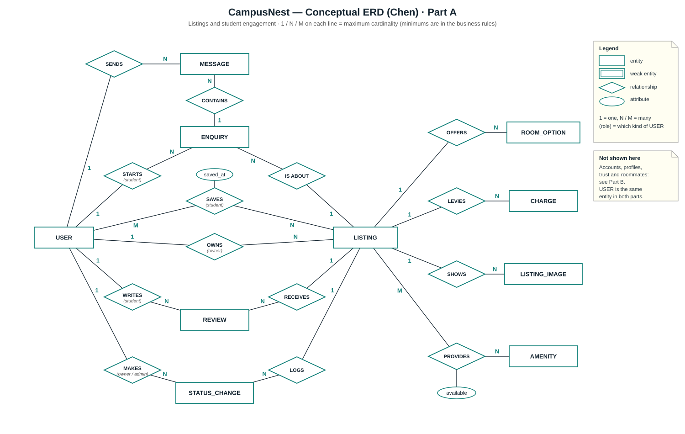
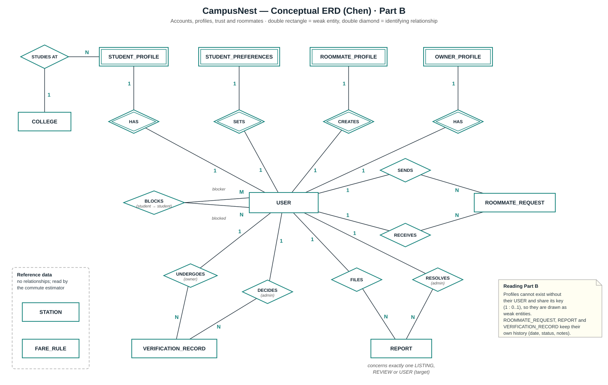
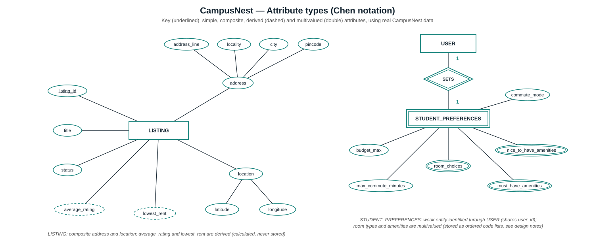
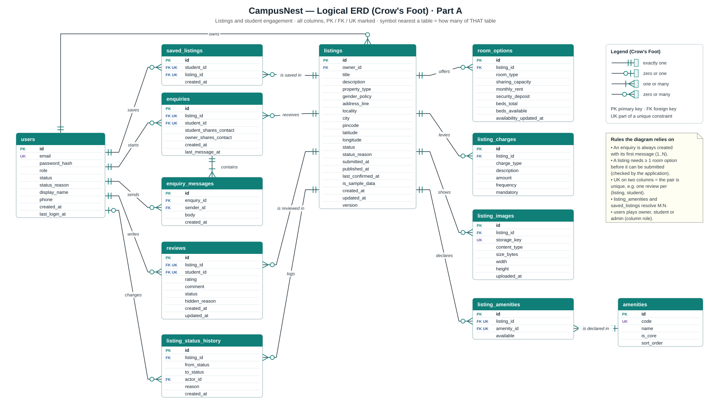
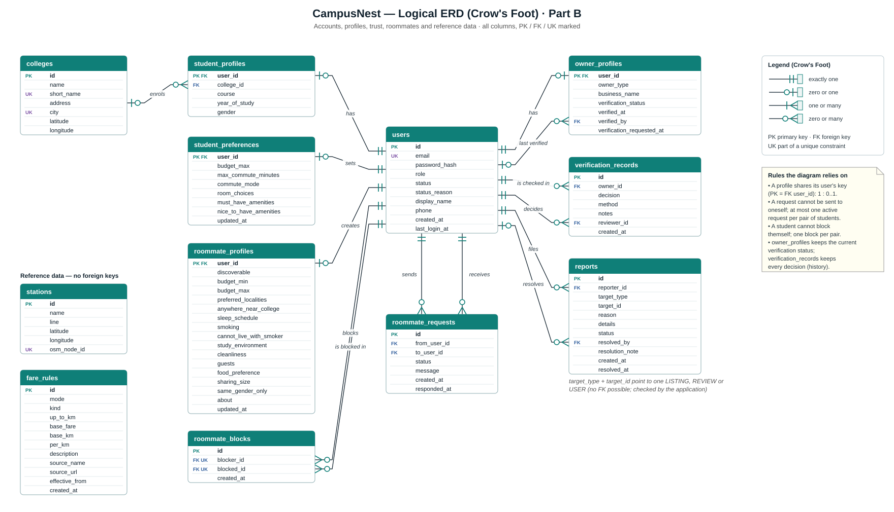

R1Every USER has exactly one role: STUDENT, OWNER or ADMIN. An email address belongs to at most one user.
R2A student user has zero or one STUDENT_PROFILE, zero or one STUDENT_PREFERENCES and zero or one ROOMMATE_PROFILE. Each of these belongs to exactly one user and cannot exist without it.
R3An owner user has zero or one OWNER_PROFILE; each owner profile belongs to exactly one user.
R4A STUDENT_PROFILE refers to zero or one COLLEGE; a COLLEGE may have zero or many students.
R5An owner may own zero or many LISTINGS; every LISTING has exactly one owner.
R6A LISTING has zero or many ROOM_OPTIONS, CHARGES, LISTING_IMAGES and STATUS_CHANGES; each belongs to exactly one listing. At least one room option is required before a listing can be submitted for review.
R7A listing may declare many AMENITIES and an amenity may be declared by many listings (M:N). Each pair appears at most once and records whether the amenity is available.
R8A student may save many listings and a listing may be saved by many students (M:N), at most once per pair.
R9A student may start zero or many ENQUIRIES, at most one per listing. Each enquiry belongs to exactly one student and is about exactly one listing.
R10An ENQUIRY contains one or many MESSAGES (it is created with its first message). Each message belongs to exactly one enquiry and has exactly one sender.
R11A student may write at most one REVIEW per listing, and only after sending an enquiry for it. Each review is for exactly one listing by exactly one student.
R12Every change of a listing's status is stored as a STATUS_CHANGE that records the old and new status and the user who made it.
R13Any logged-in user may file zero or many REPORTS. Each report is filed by exactly one user, concerns exactly one listing, review or user, and is resolved by zero or one admin.
R14Each owner identity decision is a VERIFICATION_RECORD for exactly one owner, decided by exactly one admin. An owner may have zero or many records over time.
R15A student may send and receive zero or many ROOMMATE_REQUESTS. Each request has exactly one sender and one receiver, who must be different, and two students can have at most one active request between them.
R16A student may block zero or many other students (M:N on USER), at most once per pair, and never themself.
R17STATIONS and FARE_RULES are reference data read by the commute estimator; they are not linked to other entities.



| Entity | Identifier (PK) | Table | Kind | Entity | Identifier (PK) | Table | Kind |
|---|---|---|---|---|---|---|---|
| USER | id | users | strong | MESSAGE | id | enquiry_messages | strong |
| COLLEGE | id | colleges | strong | REVIEW | id (pair unique) | reviews | associative |
| STUDENT_PROFILE | user_id (owner's key) | student_profiles | weak | STATUS_CHANGE | id | listing_status_history | strong |
| OWNER_PROFILE | user_id | owner_profiles | weak | REPORT | id | reports | strong |
| STUDENT_PREFERENCES | user_id | student_preferences | weak | VERIFICATION_RECORD | id | verification_records | strong |
| ROOMMATE_PROFILE | user_id | roommate_profiles | weak | ROOMMATE_REQUEST | id | roommate_requests | associative |
| LISTING | id | listings | strong | STATION | id; osm_node_id unique | stations | reference |
| ROOM_OPTION | id | room_options | strong | FARE_RULE | id | fare_rules | reference |
| CHARGE | id | listing_charges | strong | PROVIDES (M:N) | id (pair unique) | listing_amenities | M:N table |
| LISTING_IMAGE | id | listing_images | strong | SAVES (M:N) | id (pair unique) | saved_listings | M:N table |
| AMENITY | id; code unique | amenities | strong | BLOCKS (M:N, unary) | id (pair unique) | roommate_blocks | M:N table |
| ENQUIRY | id (pair unique) | enquiries | associative |
Every table uses a generated numeric id (a stable surrogate key) because natural values such as an email or a listing title can change. "Pair unique" means the two foreign keys together are unique (e.g. one review per listing and student), enforced by a UNIQUE constraint.


| Table | Primary key | Foreign keys (→ referenced key; delete rule) | Unique and check constraints |
|---|---|---|---|
| users | id | — | UNIQUE(email); email must be lower-case; role ∈ {STUDENT, OWNER, ADMIN}; status ∈ {ACTIVE, SUSPENDED} |
| colleges | id | — | UNIQUE(short_name, city); latitude / longitude within valid ranges |
| student_profiles | user_id | user_id → users.id (cascade); college_id → colleges.id (nullable) | year_of_study 1–6; gender ∈ {FEMALE, MALE, OTHER} or empty |
| owner_profiles | user_id | user_id → users.id (cascade); verified_by → users.id (nullable) | owner_type ∈ {INDIVIDUAL, PG_OPERATOR, HOSTEL_OPERATOR}; verification_status ∈ {UNVERIFIED, PENDING, VERIFIED, REJECTED} |
| student_preferences | user_id | user_id → users.id (cascade) | budget_max 1,000–2,00,000; max_commute_minutes 5–180; commute_mode from a fixed list |
| roommate_profiles | user_id | user_id → users.id (cascade) | budget_min ≤ budget_max; cleanliness and guests 1–5; sleep, smoking, study, food and sharing values from fixed lists |
| amenities | id | — | UNIQUE(code) |
| listings | id | owner_id → users.id (NOT NULL, no cascade) | status ∈ 7 lifecycle states; property_type, gender_policy from fixed lists; PIN code = 6 digits not starting with 0; version for optimistic locking |
| room_options | id | listing_id → listings.id (cascade) | monthly_rent 1–10,00,000; beds_total 1–500; 0 ≤ beds_available ≤ beds_total; sharing_capacity 1–12 |
| listing_charges | id | listing_id → listings.id (cascade) | charge_type and frequency from fixed lists; amount ≥ 0 |
| listing_amenities | id | listing_id → listings.id (cascade); amenity_id → amenities.id | UNIQUE(listing_id, amenity_id) |
| listing_images | id | listing_id → listings.id (cascade) | UNIQUE(storage_key) |
| listing_status_history | id | listing_id → listings.id (cascade); actor_id → users.id (nullable) | to_status NOT NULL |
| saved_listings | id | student_id → users.id; listing_id → listings.id (both cascade) | UNIQUE(student_id, listing_id) |
| enquiries | id | listing_id → listings.id; student_id → users.id (both cascade) | UNIQUE(listing_id, student_id) |
| enquiry_messages | id | enquiry_id → enquiries.id; sender_id → users.id (both cascade) | body NOT NULL (max 2,000 characters) |
| reviews | id | listing_id → listings.id; student_id → users.id (both cascade) | UNIQUE(listing_id, student_id); rating 1–5; status ∈ {VISIBLE, HIDDEN} |
| reports | id | reporter_id → users.id (cascade); resolved_by → users.id (nullable) | target_type ∈ {LISTING, REVIEW, USER} with target_id (no FK); one OPEN report per reporter and target (partial unique index) |
| verification_records | id | owner_id → users.id (cascade); reviewer_id → users.id (NOT NULL) | decision ∈ {VERIFIED, REJECTED, REVOKED}; method from a fixed list |
| roommate_requests | id | from_user_id → users.id; to_user_id → users.id (both cascade) | from_user_id ≠ to_user_id; status ∈ {PENDING, ACCEPTED, DECLINED, WITHDRAWN}; at most one PENDING/ACCEPTED request per pair (partial unique index) |
| roommate_blocks | id | blocker_id → users.id; blocked_id → users.id (both cascade) | UNIQUE(blocker_id, blocked_id); blocker_id ≠ blocked_id |
| stations | id | — | UNIQUE(osm_node_id) |
| fare_rules | id | — | mode and kind from fixed lists; metered rules need base_km and per_km, slab rules need up_to_km; amounts ≥ 0 |
All primary keys are unique and NOT NULL; every foreign key must refer to an existing parent row. "Cascade" means deleting the parent also deletes these rows; references without cascade stop the parent from being deleted while children exist.
| Table | Key | Illustrative values |
|---|---|---|
| users | U1 / U2 / U3 / U4 | admin (ADMIN) · asha (STUDENT) · meera (STUDENT) · ramesh (OWNER) |
| colleges | C1 | VJTI, Mumbai |
| student_profiles | U2 | college C1 · MCA · year 1 |
| owner_profiles | U4 | VERIFIED · verified_by U1 |
| listings | L1 | "Green Nest PG" · owner U4 · PUBLISHED_AVAILABLE |
| room_options | R1 | L1 · DOUBLE · beds_total 4 · beds_available 2 |
| enquiries / enquiry_messages | E1 / M1 | E1 = L1 + U2 · M1 = E1, sender U2 |
| reviews | V1 | L1 · U2 · rating 4 |
| roommate_requests | Q1 | U2 → U3 · PENDING |
Illustrative sample data, not real people.
| Question | Answer and how it is enforced |
|---|---|
| Can a new student have no enquiries, reviews or saved listings? | Yes — optional participation (0..N). |
| Can L1 exist without an owner? | No — listings.owner_id is NOT NULL and must match a user. |
| Can U2 review L1 a second time? | No — UNIQUE(listing_id, student_id) on reviews. |
| Can R1 show 5 free beds when it has 4 beds? | No — CHECK 0 ≤ beds_available ≤ beds_total. |
| Can U3 send U2 a new request while Q1 is pending? | No — partial unique index on the pair of students. |
| Can U2 have two STUDENT_PREFERENCES rows? | No — user_id is the primary key (1 : 0..1). |
| Can "Asha@Example.com" register beside "asha@example.com"? | No — UNIQUE(email) plus the lower-case CHECK. |
| If L1 is deleted, do E1, M1 and V1 remain? | No — ON DELETE CASCADE removes them. |
| Can U4 be deleted while L1 exists? | No — owner_id has no cascade, so the foreign key blocks it. |
| Can U2 review L1 without an enquiry? | No, but enforced by the application (R11), not by a table constraint. |
listings.owner_id point to users.id;
that the user has the right role is checked by the application.available), saved_listings and roommate_blocks are
relationship tables; enquiries, reviews and roommate_requests are associative entities because they carry
their own data and history.listings.status and owner_profiles.verification_status
hold the current value for fast reads; listing_status_history and verification_records keep every change and
are never overwritten.Consistency with other diagrams: entity names match the Java classes (users ↔ UserAccount,
listings ↔ Listing, room_options ↔ RoomOption, …) and the class diagram in docs/UML.md.